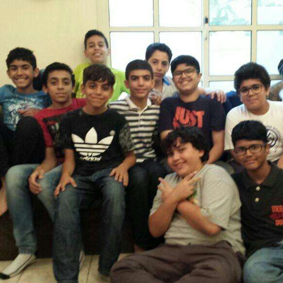
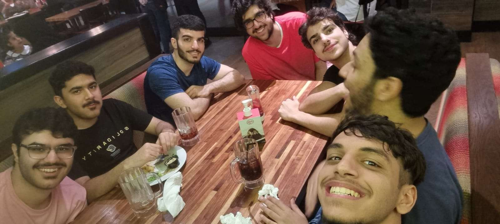

Ali Qamber
In my life, Ive met people that have come and gone. However I am grateful for the group of friends that have stayed with me and will always stay with me. Weve got quite a large group of friends. Our group has grown significantly over the years as you will see later on Each of our friends have something special about them. I could go on and on about each and every one of them and all their special quirks but we dont have all day of course. Our group has a special history, a history of ups and downs. But will all of that, we grow closer and closer each time.
Our group started off very small, infact you couldnt even call it a group at that time. It was just me and Yusuf all the way back in grade 4. Me and yousif met because we both discovered that our favorite game at that time was minecraft and we grew closer from there. And it was because of minecraft that an actual group started forming. In grade 6, I told yousif that we need more people to play minecraft. Here we met Sayed faisal, and two others who unfortunatley left bahrain. As the years passed, us three kept finding more people to join us to play minecraft. Our group started branching off of minecraft and played many other games. We made some of the greatest memories with all games we played togther and other fun places that weve been to.
Our group of friends remain strong and healthy today. Through its life span many have entered and left. Today our group consists of Me of course, Mustafa, Sayed Fasial, Abdulrahman, Adam micheal, Ahmed Abdulsalam, Ali mahmood, Hashim, Isa, Khalid Ziad, Mahmood Faqihi, Omar, Saad, Sayed Hashim, and Yusuf Mahmood. The future looks bright and these people, things can only keep going up.
